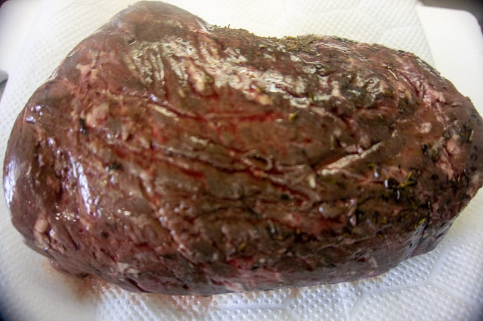
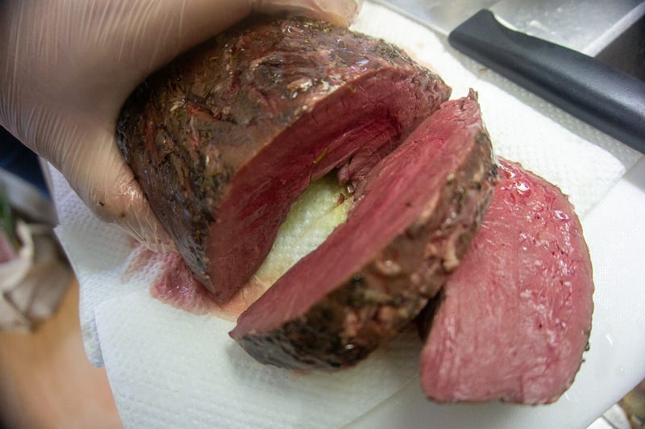
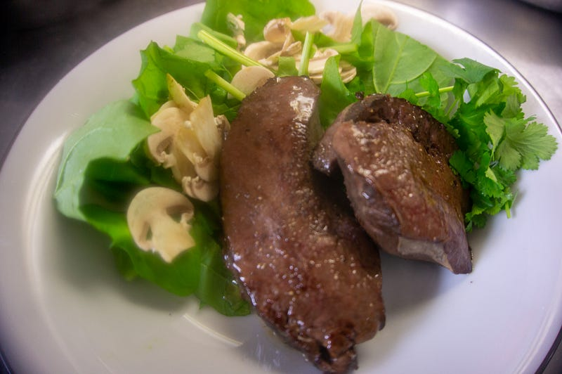
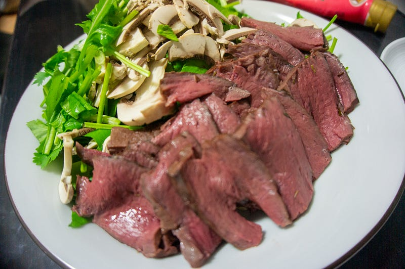

牛ハツを低温調理してタタキにする
牛ハツを低温調理してタタキにする
前回は鶏ハツを調理したけど、ついでに自分でやったことなかったので牛ハツをオーダーしてみた。
長男がインフルで伏せっているが、そんな日に限って数週間前にオーダーしていた生の鶏ハツが送られてくる。本当はそんな場合じゃないのだが、冷凍ではなくチルド配送なのでとにかく早めに食べるしかない……medium.com
tl;dr すると、低温調理のハツ、うまい！うまいけど、下処理が重要で、わりと面倒。そして塊を料理したほうがいいんだけど、調理後なるたけ速く食べた方がいいので量がネックになってくる。なのでやるときには覚悟が必要。
では本文をどうぞ。
牛ハツというともう何年も前にあるホルモン屋で食べたレアステーキのようなものが思い出される。あれはうまかったけど、あれ以上の情報は特に持ってないので完全に手探り状態からスタートである。
とりあえず低温調理して、ステーキ風味にして食べることで一番シンプルな味を確かめることにする。
一応調べてみたところ、かなりかたい膜があるのと、血管もわりと食べづらいということでまずは下拵え。
外側に見える膜の下に包丁を入れて引っ張りつつ膜をはがしていく。膜自体はわりと簡単にとれるけど、正直デコボコでやりづらい。プロだったらもっと厚く切っちゃうのかなぁと思いながらチマチマと処理。
内側にも膜はあるけど、外ほどかたくなさそうなので、疲れてたのもあって適当に処理。実際膜自体はそれほどでもなかったのだけど、内側に大量にあった血管があとあとかなりくせ者だった。うまく包丁を入れられるなら！内側も割と大胆に膜と血管を除去しとくとより口当たりがよくなると思う。
これを56.5で5時間ほど。基本牛肉ステーキを作るのと同じ工程。

さすがにこのままではでかすぎるのでステーキの厚さくらいにしてみる。

うおおおおおお、いい色… まずは基本の味を知りたいので塩胡椒で揚げ焼きという感じでいきました。

うまい！内蔵好きにはたまらない感じ！ 肉の部位によってわりと顕著に味や食感が違うかも。僕は好き。
うっ… だが… 食べ続けていると… 血管がかたい… なるほど、ちょっとはしょっちゃった内部の処理はもっとちゃんとやるべきだったのか…！
そしてね、塩胡椒だと弱いことがわかった。内蔵好きにはもちろんおいしい味なんだけど、本当にさばきたてを使うか、おれみたいななんちゃってじゃなくてもっとちゃんと下ごしらえしないと塩ではパンチが足りない。これはもっと醤油やデミグラスみたいな強いソースのほうがより相性がいいと思う。
妻はおいしいおいしいと食べてくれたし、自分もおいしく食べられたけど、この感じだと、お好きな人にしか出せない感じがする。内蔵を食べ付けてない人に出すのはちょっと…。
とにかく、元の味もあるだろうけど、とにかく僕の下処理が良くなかったと思われる。もっと万人に受けるためにはもう少ししつこく血と血管を取り除いておくべきだった。
だが、この状態でもまだまだおいしく食べられる。残りのハツは翌日タタキ風味にして、強い香辛料 — ニンニクとショウガ醤油で食べるとあーら不思議。匂いも完全に気にならない。というか、最初からこれにしたほうがうまかった気がする。

そして最後の問題… 量が多かった… これは大人８人くらいで食べても良い量だった。半分以上食べたけど、味の劣化に消費がおいつかなかった… ハツさん、ごめん。次回はちゃんと下ごしらえをするのと、ちゃんと食べる人を用意するから… と唱えながら残りとはさよならしました。本当に申し訳ない。
というわけで、肉自体はすごくおいしいし、低温調理に合うと思うのでおすすめなんだけど、下ごしらえをちゃんとすること、量に気をつけること、の２点にご注意ください。あとは多分だけど、もっと長く低温調理しても良いかもしれない。